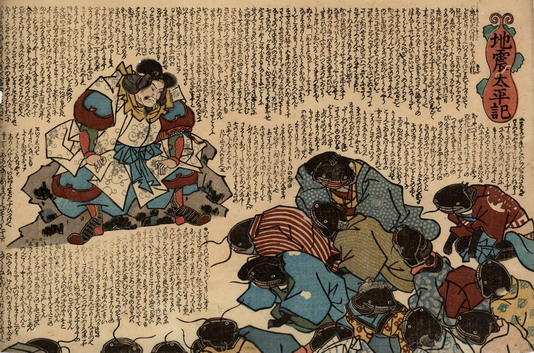

鹿島大明神に向かって、謝る鯰たち。彼らは元禄から安政までの間に地震を起こした鯰たちである。皆、口を開いて歯を覗かせ、着物を身にまとっている。着物の柄には瓢箪柄、宝珠柄などがある。体は黒いが、人間のものである。頭に髪が生えており、人間のように髷を結っている。髪型服装から男の鯰と女の鯰がいることがわかる。
出典：親書誌：U426_nichibunken_0191：地震太平記；ジシンタイヘイキ／日付：2010／資源識別子：U426_nichibunken_0191_0001_0000
Copyright (c)2010- International Research Center for Japanese Studies, Kyoto, Japan. All rights reserved.